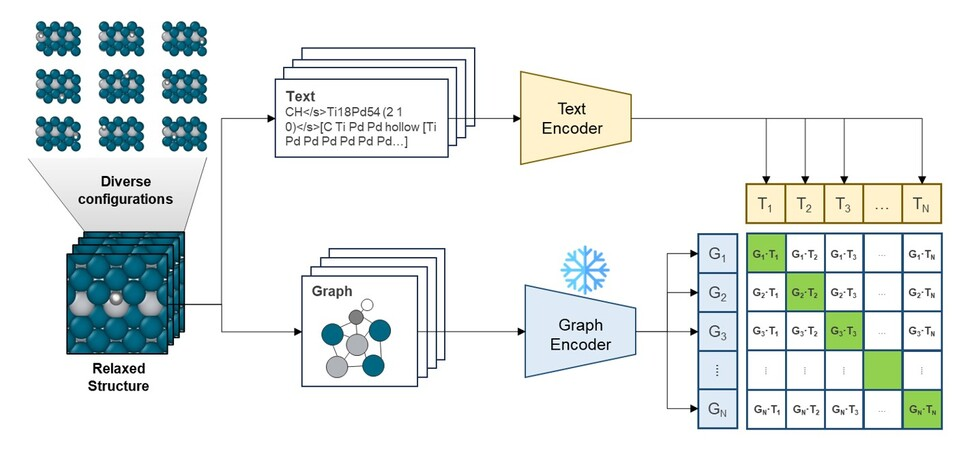

Multi-Peptide: Multimodality Leveraged Language-Graph Learning of Peptide Properties
A multimodal deep learning model for peptide property prediction, combining sequence and structural data via contrastive learning. State-of-the-art results, published in ACS JCIM.

Multimodal Language and Graph Learning of Adsorption Configuration in Catalysis
A generative-predictive pipeline for adsorption energy prediction, combining LLMs and graph-based multimodal learning. Published in Nature Machine Intelligence.
MOFGPT (ongoing)
A GPT-2-based generative model with policy gradients to design novel, viable Metal-Organic Frameworks (MOFs) for gas storage, separation, and catalysis.
AI Agent for Drug Discovery (ongoing)
An autonomous pipeline pairing generative models with verifiers to accelerate de novo drug design and molecular optimization.
Character-Consistent Diffusion for Visual Storylines
Character-consistent diffusion models integrating Prompt-to-Prompt techniques, caption-based dynamic conditioning, and latent space alignment for coherent sequential storylines.
THALA - Thermodynamics Helper Library
Production Python library for thermodynamic analysis, with end-to-end workflows and version control.
Content Pipeline
LLM + TTS pipeline for automated podcasts, enhancing public accessibility to knowledge. Live on Spotify.
Automated Content Creation Platform
PDF → lecture video pipeline, reducing content preparation time for educators by roughly 80%.
Data-Driven Refinery Process Optimization
Multivariate deep learning models optimizing refinery operations for improved profitability and efficiency.
Production ML Pipeline on AWS
Object recognition pipeline deployed on AWS SageMaker, reducing service wait times by half.